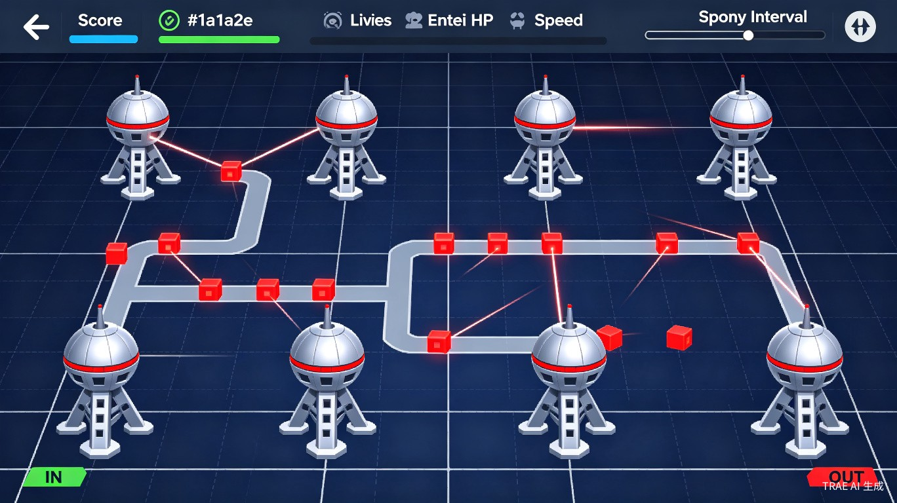

用智慧搭建迷宫，用策略守护防线
生活娱乐赛道《东方迷宫塔防》是一款融合了迷宫建造与经典塔防策略的网页小游戏。与传统塔防游戏不同，本作的核心创新在于：玩家不再被动防守固定路径，而是主动用防御塔搭建迷宫，引导敌人走向更长的路线，从而获得更多的攻击时间。
游戏灵感来源于经典的迷宫塔防玩法，但加入了独特的BFS智能寻路系统和东方明珠风格的视觉设计，让策略深度与视觉美感兼得。

我们的解决方案：让玩家成为"迷宫设计师"，每一局都是全新的迷宫创造。独立BFS寻路确保流畅，东方明珠视觉风格带来独特辨识度。
提供了一种"创造+策略"双重满足的游戏体验。玩家既是迷宫设计师，又是战术指挥官。每一局游戏都是独一无二的迷宫创作，重玩价值极高。
游戏底层使用了BFS广度优先搜索算法，玩家在游玩过程中无形中接触到了路径规划、图论等计算机科学概念，具有寓教于乐的意义。
防御塔采用上海东方明珠的造型设计——银色球体、红色环带、竖直支撑柱、底部三腿，将城市地标融入游戏美学，具有独特的文化辨识度。
单HTML文件即可运行，无需后端、无需安装，打开即玩。展示了现代Web技术（Canvas、ES6 Class、requestAnimationFrame）在游戏开发中的强大能力。
《东方迷宫塔防》不仅是一款小游戏，更是对"玩家创造力"的一次探索。我们相信，最好的塔防不是设计师预设的，而是玩家自己一手搭建的。